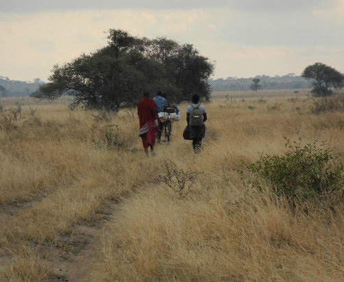
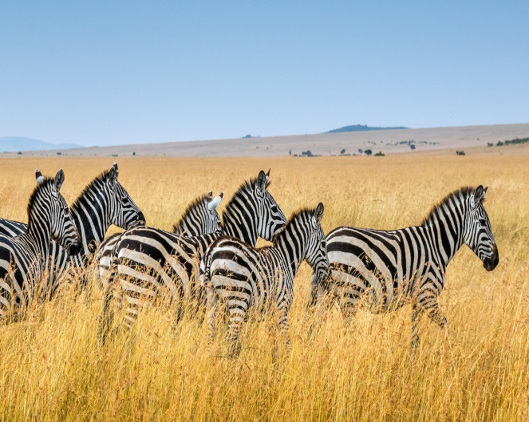
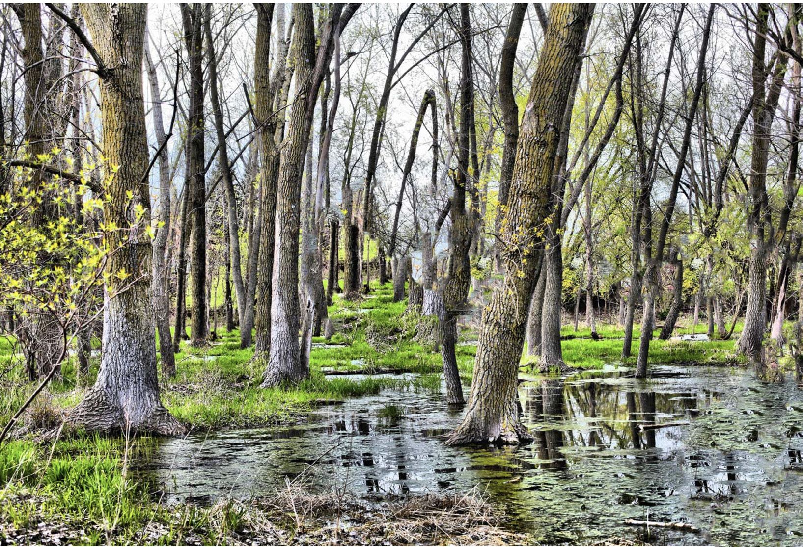

Swamp vegetation
A swamp is a wetland with woody vegetation (Figure 4.14). Swamps are waterlogged environments which may be characterised by standing water, shallow or slow-moving water, and waterlogged soils. They are home to a variety of plant species adapted to these unique conditions, including emergent plants, floating plants, submerged plants, trees like mangroves, shrubs, mosses, and ferns.

60